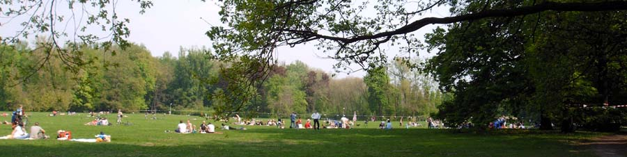

>>>> zurück zur Hauptseite
Zurück zum Anfang der Seite.
Die Administratoren dieses Gästebuch bemühen sich, Beiträge mit fragwürdigem Inhalt so schnell wie möglich zu bearbeiten oder ganz zu löschen, aber es ist nicht möglich, jede einzelne Nachricht zu überprüfen. Die Administratoren, Webmaster und Betreiber dieser Seite sind nur für ihre eigenen Beiträge verantwortlich. Beleidigende, obszöne, vulgäre, verleumderische, gewaltverherrlichende oder aus anderen Gründen strafbare Inhalte führen zu alsbaldiger Löschung. Wir behalten uns vor, Verbindungsdaten u. ä. an die strafverfolgenden Behörden weiterzugeben.
Zurück zum Anfang der Seite.

Wiese im Mai 2006
Wiese im Mai 2006
|
Aus: Die verhinderte Weltausstellung. Beiträge zur Berliner Gewerbeausstellung 1896. Herausgegeben vom Bezirksamt Treptow zu Berlin. 1. Auflage, Berlin 1996 / von Daniela Schnitter Splitter aus der Geschichte des Treptower Parks |
|
| Ende des 18. Jahrhunderts | Dort, wo sich heute der Treptower Park erstreckt, dehnte sich damals die "Cöllnische Heide", die der Berliner Magistrat seit 1823 sukzessive abholzen ließ. Das Terrain des sog. "Alte Treptower Parks" oder "Südparks" (zwischen dem heutigen Heidekampgraben und der Bulgarischen Strasse) blieb jedoch verschont. Anfang des 19. Jahrhunderts …wurden weiter Parkteile angelegt: ein "Park bei Treptow" und ein "Park vor dem Schlesischen Thor" |
| 1821 / 1822 | Anstelle des alten, unrentabel gewordenen Kruges (Anfänge des Bewirtungsgewerbes datieren aus dem 17. jahrhundert) erbaut Carl Ferdinand Langhans ein neues Gasthaus in klassizistischer Form, mit Dachterrasse und ausgedehntem Vorgarten, Blumenbeeten und Promenadenanlagen, den Vorläufer des heutigen "Zenner". Das alte Vorwerk und sein Wirtschaftshof müssen weichen. |
| Erste Hälfte des 19. Jhds. | Treptow wird ein "beliebtes Ausflugsziel". Der traditionelle "Stralauer Fischzug" und die seit 1825 abgehaltenen Feuerwerke machen Treptow berlinweit bekannt und beliebt |
| 60er Jahre des 19. Jh. | Der Berliner Magistrat beschließt eine Konzeption zur Anlage großer Volksparks in allen vier Himmelsrichtungen. So entstehen in den siebziger du achtziger Jahren im Westen der Tiergarten, im Osten der Friedrichshain, im Norden der Humboldthain und im Süden der Treptower Park. |
| 1864 | Johann Heinrich Gustav Meyer (1816 - 1877), Lenne-Schüler und -Mitarbeiter und Hofgärtner in Potsdam, legt einen ersten Entwurf für die Gestaltung eines "Parks vor dem Schlesischen Thore" vor. Kernstück seiner Planungen ist ein ovaler "Spielplatz", umgeben von Terrassen und Böschungen. Ein Spielplatz als Kernstücks eines "Volksparks" ("Sozialpark") ist ein Novum in der zeitgenössischen Gartenarchitektur. Aber auch Stilelemente des Landschaftsparks (Einbeziehung von Gewässern, geschwungene Wegeführung u.a.) finden Eingang in die Planung. Folgerichtig und trotz aller finanzieller Schwierigkeiten bei der Realisierung des Vorhabens wird der Treptower Park ein herausragendes Beispiel für die Volksparkbewegung des 19. Jhs. Die hohen Kosten (60450 Reichstaler), teilweise bis 1868 laufende Pachtverträge auf dem geplanten Terrain, ungeklärte Probleme bei der Überschwemmungs- bzw. Entwässerungsregulierung, schwebende Separationsfragen und notwendiger Landkauf bzw. -tausch veranlassen jedoch die Stadtverordneten von Berlin, das Projekt vorerst (1865) zurückzustellen. |
| 1870 | Gustav Meyer wird erster Stadtgartendirektor von Berlin und nimmt die Planungsarbeiten am Treptower Park wieder auf. Die Probleme bezüglich des Parkentwurfes und die Diskussionen in der Stadtverordnetenversammlung und im Magistrat begleitete er seit 1864 gutachterlich. |
| 1871 | Die neue Ringbahn wird dem Verkehr übergeben. Sie durchschneidet den geplanten Park und trennt seine nordwestliche Ecke ab, Meyer gestaltet diesen Teil zu einem Villenviertel um. |
| 1874 | Der Berliner Magistrat befasst sich nach dem Ablauf der letzten Pachtverträge (1868 für sechs Jahre abgeschlossen) im geplanten Terrain erneut mit dem Projekt und erklärt seine Entschlossenheit, den Plan zu verwirklichen. |
| 1874 / 1875 | Meyer legt seinen zweiten Entwurf für den Park vor, der sich nur unwesentlich, abgesehen von dem angelagerten dendrologischen Garten, vom ersten unterscheidet. Statt des kleinen Teiches entsteht eine Wiesenaue, die Uferlinie des großen Teiches wird geringfügig verändert. Südöstlich der Parkallee (heutige Bulgarische Straße) ist ein dendrologischer Garten geplant, der jedoch nie zur Ausführung kam. Stattdessen entsteht dort der Plänterwald. Die Kosten für die Parkgestaltung haben sich gegenüber 1864 vervielfacht (1.073.100 Mark) 1876 beginnen die Arbeiten am Park. |
| 1877 | Nach dem Tode Meyers führt Hermann Mächtig (1837 - 1909) das Projekt ganz im Sinne seines geistigen Vaters fort. |
| 1880 | Der 3,9 Hektar große Karpfenteich wird ausgehoben. Mit dem gewonnenen Boden werden die Terrassen um den Spielplatz aufgeschüttet. |
| 1881 | Die Stadt Berlin erwirbt die Wiese der St.-Petri-Kirchengemeinde zur Abrundung des Treptower Parks nach der Spreeseite hin. Die Verhandlungen dazu liefen seit 1865, zunächst als Tausch- später als Verkaufsverhandlungen. |
| 1887 | Der Magistrat von Berlin beschließt den Bau eines Unterkunfts- und Bewirtungshauses zwischen Karpfenteich und Spielplatz. Im Jahre 1984 findet die Eröffnung statt; 1901 übernimmt der bekannte Berliner Kaffeehausbesitzer Ernst Bauer die Restauration und baut sie zum "Karpfenteichrestaurant" um. Im Zweiten Weltkrieg werden die Anlagen zerstört. |
| 1888 | Die Arbeiten im Treptower Park werden beendet. Insgesamt wurden 130.000 Kubikmeter Boden bewegt, 70.000 Gehölze (aus mitteleuropäischen Klimazonen) angepflanzt, 3000.000 Quadratmeter Rasen angelegt, 80.000 Kubikmeter Kies, 60.000 Kubikmeter Steine für den Wegebau verwendet. |
| Neunziger Jahre des 19. Jhds | Der Park entwickelt sich zu einem beliebten Ausflugsziel für Groß und Klein, Jung und Alt mit Gartenrestaurants wie Perlen an der Schnur, Bademöglichkeiten an der Spree und vielen anderen Vergnügungen. "Hier können Familien Kaffee kochen" wird zum geflügelten Wort. |
| 1894 | Die "Allgemeine Deutsche Landwirtschaftliche Wanderausstellung" findet im Treptower Park statt. |
| 1895 | Baubeginn für den Tunnel zwischen dem Treptower Spreeufer und der Stalauer Halbinsel. Diese Anfänge eines Untergrundbahnbaus sind 1896, während der Berliner Gewerbeausstellung, zu besichtigen. 1899 wird der Tunnel eröffnet. Bis 1932 verkehrt eine eingleisige Tunnelbahn (im Volksmund "Knüppelbahn" genannt) unter der Spree. |
| 1896 | Vom 1. Mai bis 15. Oktober findet die "Berliner Gewerbe-Ausstellung" im Treptower Park statt. Der Park wurde vom Berliner Magistrat nur unter der Bedingung zur Verfügung gestellt, dass er nach ihrem Abschluss wieder in den früheren Zustand zurückversetzt würde. Daraus erklären sich die teilweise asymmetrischen Grundrisse und die Lage einzelner Gebäude. Alle Vorhaben, Ausstellungsteile dauerhaft zu erhalten, möglicherweise ein "Tivoli" zu schaffen, scheiterten. Lediglich das Riesenfernrohr der heutigen Archenhold-Sternwarte hat die Zeit überdauert, die Urnenhalle (des Vereins für Feuerbestattungen), die als Begräbnisstätte genutzt worden war, wurde im Zweiten Weltkrieg zerstört Im Zuge der Gewerbeausstellung wird die verkehrstechnische Anbindung des Parks und der Landgemeinde Treptow an Berlin wesentlich verbessert. |
| 1896 | Beginnt auf der dem Park vorgelagerten Rohrinsel der Bau eines Restaurants im Stile einer schottischen Klosterruine, die der Insel den Namen "Abteiinsel" einbringt. |
| 1897 | Die Gartenbauausstellung des "Vereins zur Förderung des Gartenbaus in den königlich-preußischen Staaten" findet im Treptower Park- in einigen von der Gewerbeausstellung zu diesem Zweck erhaltenen Gebäuden (z.B. dem Gebäude für Chemie, Optik, Mechanik und Photographie) statt. Die Häuser werden wie Treibhäuser genutzt, in ihrem Inneren Blumenbeete angelegt. |
| 1898 | Die Wiederherstellung des Parks ist beendet. |
| 1906 | Die große Wiese wird als "Spielwiese" ausgewiesen. |
| 1908 | Die Marmorplastik "Am Meeresgrund" des Bildhauers Otto Petri wird am Karpfenteich aufgestellt. |
| 1908 / 1909 | Bau der Sternwarte durch die Baumeister Fritz Reimer und Friedrich Körte. 1946 erhält sie den Namen ihres Begründer Friedrich Simon Archenhold. |
| 1910 | Am 10. April findet ein "Wahlrechtsspaziergang" gegen das herrschende Dreiklassenwahlrecht im Treptower Park statt. In der Folgezeit wird der außerhalb der Stadtgrenze liegende Park einer der Versammlungsorte der Sozialdemokratie. |
| 1911 | Vor dem Hintergrund der "Marokkokrise" findet am 3. September im Treptower Park eine große Antikriegsdemonstration statt, auf der führende Mitglieder der Sozialdemokratie sprechen. |
| 1912 | International eskalierende Entwicklungen (italienisch-türkischer Krieg, Beginn der Balkankriege) rufen Antikriegskräfte auf den Plan. Am 20. Oktober findet die bis dahin größte Manifestation im Treptower Park statt. |
| 1913 | Die Stadtgemeinde Neukölln kauft die Abteiinsel. Bis heute ist das Neuköllner Wappen am Brückenbogen zu sehen. |
| 1915 / 1916 | Brücke zur Abteiinsel wird gebaut. Als eine der ersten Bogenbrücken aus Stahlbeton in Deutschland ist sie ein technisches Denkmal. |
| 1918 | Vor dem Hintergrund des wachsenden Kriegselends, der Kriegsmüdigkeit und der deutschen Ansprüche bei den Friedensverhandlungen in Brest-Litowsk wird auch der Treptower Park Ort von großen Streik- und Protestaktionen, so am 31. Januar und 2. Februar. |
| 1918 | Während der Novemberrevolution wird auch der Treptower Park zum Kundgebungsort. Führende Mitglieder des Spartakusbundes sprechen z.B. am 8. Dezember zu den Versammelten. Nach dem Ersten Weltkrieg wird der Treptower Park Veranstaltungsplatz von Turnfesten. Auch die Arbeitersportorganisation "Fichte" führt Turn- und Sportfeste auf dem großen Spielplatz des Parkes durch. |
| 1927 | Seit der Inbetriebnahme des Kraftwerkes Klingenberg, nach damaligen Maßstäben ein moderner Betrieb, wird auch der Erholungswert des Treptower Park es durch Flugasche und Ruß stark gemindert. |
| 1931 | Anfang der 30er Jahre de 20. Jahrhundert wird der Treptower Park an den Sommer- und Sonntagen als Erholungsort so stark frequentiert, eine behelfsmäßige "Sammelstelle für verlaufene Kinder" eingerichtet wird. |
| 1933 | Der Treptower Park und seine Baulichkeiten werden für Arbeiten gegen das nationalsozialistische Regime genutzt. In der Sternwarte wurden bis zum November/Dezember 1933 in illegaler Weise falsche Pässe ausgestellt. |
| 1937 | Die an der Spree liegende Festwiese des Treptower Parks für den Stralauer Fischzug wird höher gelegt und damit die dort bis dahin bei starkem Regen auftretenden Überschwemmungen beseitigt. |
| 1938 | Ende August/Anfang September findet das nationalsozialistische Berliner "Kraft- durch- Freude"- Sommerfest im Treptower Park, auf dem Terrain um den großen Spielplatz herum, statt. Erst 1939 ist der Platz wieder aufgeräumt und instand gesetzt. |
| Im Zweiten Weltkrieg | dienen Teile des Treptower Parks als Übungsplätze für Wehrmacht, Polizei und Selbstschutz. In der letzten Phase des Krieges wurde um den Treptower Park schwer gekämpft. Hier hatten sich SS-Einheiten verschanzt, die noch im April 1945 hartnäckigen Widerstand leisteten. Die Urnenhalle, in deren Nähe ein befestigter Splittergrabenangelegt worden war, das Gasthaus "Zenner" und das Hauptgebäude der Sternwarte wurden zerstört, der Park durch Bomben und Gefechte verwüstet. |
| 1946 | Am 19. Mai findet eine Bezirks-Befreiungsfeier im Treptower Park statt. Bürgermeister Donner spricht über "Ein Jahr Aufbauarbeit" im Bezirk. |
| 1946 - 1949 | Bau des Treptower Ehrenmals für die über 5.000 in den Kämpfen um Berlin gefallenen sowjetischen Soldaten. Nach Entwürfen von J.B. Belopolski und J.W. Wutschetitsch entsteht hier ein eindrucksvolles, monumentales Ensemble aus Plastiken, Stelen und Grabflächen, deren Hauptelement eine 13 m hohe Bronzefigur eines Sowjetsoldaten mit einem Kind auf dem Arm, ein Symbol des Sieges und der Zerschlagung des faschistischen Regimes, ist. An Staatsfeiertagen der DDR werden am Ehrenmal Gedenkfeiern durchgeführt. |
| Fünfziger Jahre des 20. Jh. | Der Treptower Park u.a. wird Schauplatz von Massenveranstaltungen der Jugend (1. Deutschlandtreffen 1951, III. Weltfestspiele 1951). Auch in der folgenden Zeit, bis in die achtziger Jahre hinein, finden hier große, von der FDJ ausgerichtete, Jugendveranstaltungen statt. |
| 1955 / 1956 | Wiederaufbau des Gasthauses "Zenner" |
| 1957 | Zum ersten Mal findet die Ausstellung "Plastik und Blumen" im Treptower Park, in Verbindung mit einer großen Dahlienschau, statt. "Plastik und Blumen" wird in den folgenden Jahren zur Tradition und seit 1963 auch von Künstlern aus dem Ausland beschickt. |
| 1957 / 1958 | Der Landschaftsarchitekt Georg Pniower gestaltet einen Sommerblumengarten im Treptower Park. |
| 1968 / 1969 | Gegenüber dem nördlichen Eingang zum Ehrenmal wird ein Rosengarten durch den Gartenarchitekten Hubert Matthes gestaltet. |
| 1973 | Anlässlich der X. Weltfestspiele der Jugend und Studenten wird ein Weltfestspielsymbol (Metallblume von Achim Kühn) am Rosengarten aufgestellt. |
| In den siebziger Jahren des 20. Jh. | Wird der Park beliebter Kulturort des Bezirks, vor allem Open-Air-Konzerte finden ein großes Publikum. |
| 1978 | Am Eingang zur Sternwarte entsteht ein "Hain der Kosmonauten" mit Büsten von Waleri Bykowski und Siegmund Jähn, dem ersten deutschen Kosmonauten. Später kommt eine Büste Juri Gagarins hinzu. Nach der Wende werden die teilweise beschädigten Büsten abgetragen und der Hain 1992 eingeebnet. |
| 1992 | Beginn der Rekonstruktion der Abteibrücke. 1994 wird sie wieder freigegeben. |
| 1994 | Eine umfassende Rekonstruktion des Treptower Park beginnt. Diese bis ins Jahr 2000 konzipierten Maßnahmen sollen den Park, soweit möglich, in seiner ursprünglichen, auf Meyersche Intentionen zurückgehende, Gestalt wiedererstehen lassen. |
| 1995 | Nach erfolgter Rekonstruktion ist die "Insel der Jugend" wieder zugänglich. Im gleichen Jahr beginnen Sanierungsarbeiten an der Archenhold-Sternwarte. Beginn Sanierungsarbeiten Ehrenmal |
| 2005 | Wegen der starken Frequentierung des Parkes aus allen Teilen Berlins, wird ein Grillplatz festgelegt. Dies soll Zerstörung und Vermüllung des Treptower Parks eindämmen helfen. |
| Sommer 2006 | Anlässlich der Fußball-WM in Deutschland, wird die große Wiese gesperrt. Es findet eine mehrwöchige Veranstaltung "popkick'06" statt. Der befürchtete Schaden durch die erwarteten Zehtausenden von Besucher tritt nicht ein. Nur an vier Tagen der gesamten Zeit sind ca. 25 000 Besucher da. Die Fanmeile in Mitte zieht die Besucher. Außerdem hat die Polizei durch Präsenz und Taktik, weil sie die Befürchtungen der Bevölkerung ernst genommen hat, die Massen total im Griff: Der Park ist sicherer und sauberer als jemals sonst. |
| Sommer 2007 |
Nicht zuletzt durch "flopkick'06" sind neue Nutzergruppen auf
den unübersichtlichen Park aufmerksam geworden. Es sind leider nicht nur die Erholungssuchenden, Naturliebhaber und Familien. Es sind Gruppen von Jugendlichen, die sich in Chatrooms verabreden. Am Alexanderplatz bekamen sie Platzverbot. Sie trinken Alkohol und konsumieren auch anderes. Zurück lassen sie, zum Schrecken der Familien und älteren Mitmenschen, die Wiesen als Müllhalde und auf den Wegen Glasscherben. Diese Chatterpartys beginnen erst am späten Abend. Gestört werden vor allem die Bewohner in Alt-Strahlau. In bestimmten Nächten hat die Polizei eingegriffen, sie ist aber leider nicht immer zur Stelle. |
Die Administratoren dieses Gästebuch bemühen sich, Beiträge mit fragwürdigem Inhalt so schnell wie möglich zu bearbeiten oder ganz zu löschen, aber es ist nicht möglich, jede einzelne Nachricht zu überprüfen. Die Administratoren, Webmaster und Betreiber dieser Seite sind nur für ihre eigenen Beiträge verantwortlich. Beleidigende, obszöne, vulgäre, verleumderische, gewaltverherrlichende oder aus anderen Gründen strafbare Inhalte führen zu alsbaldiger Löschung. Wir behalten uns vor, Verbindungsdaten u. ä. an die strafverfolgenden Behörden weiterzugeben.
IMPRESSUM
Zurück zum Anfang der Seite.